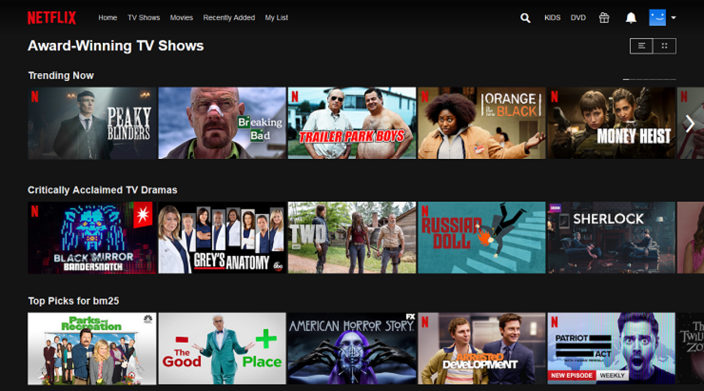

Projects

School Website
Developed a responsive website for an educational institution with course listings and event information.
Live Demo
Mental Health Website
Built a mental health resource platform with educational content and self-help tools.
Live Demo
Samoka Motors
Designed a professional automotive website showcasing inventory and services.
Live Demo
Movie Recommendation System
Python-based movie recommendation system using user preference logic.

Inter-VLAN Routing
Network configuration project implementing inter-VLAN routing using Cisco Packet Tracer.

Personal Portfolio
Responsive portfolio website showcasing skills, projects, and professional experience.